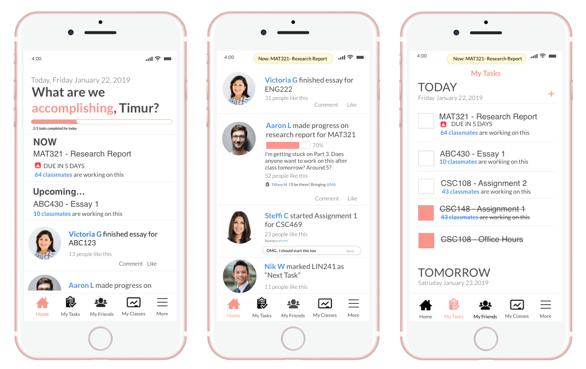

Introduction
I went to Berlin, Germany to take a course on UX Design. It was my first time in Europe and I had the biggest problem of wanting to explore
the city while completing all my assignments in time. But, I realized the problem didn't just stem from me. The entire cohort was facing this problem.
I led my team in creating a mobile application that helps students manage their tasks. The idea of mobile apps targeting productivity might seem overdone,
but we realized that none of us actually used any kinds of productivity apps.
We hope that this is unique and different from what the current market has to offer.
Everything is an iteration. Everything is a current. But everything will be improved. Given the user-centered design, my team was able to make adjustments as we went.

For the purposes of this portfolio, I will only focus discover, define, design and develop.
DISCOVER
How do we make the most out of our time?
The problem is that students struggle to balance their free time with work.
How do we make students more productive and more efficient? How do we evoke good habits to form good studying techniques?
To answer these questions, we conducted thorough user research with stakeholders through interviews and questionnaries.
We also read scientific journals on happiness and productivity, habits, design for decision,
and the effect on framing incentives on student productivity.
Here's what we found:
- Little reliance on technology
Very few participants used any type of software tool to track their work. Some participants we interviewed made basic use of agendas and mobile calendars. One participant said he keeps track of his assignments "all in my head. I have a rough idea and then I check the course website." - Goals and timeliness are a challenge
Procrastination was a recurring topic among all the interviews. Closer deadlines created urgency and a higher work rate. Feelings of guilt and anxiety drove students to action. - Work patterns
Students preferred extended periods of work over short intervals, but short intervals were preferred over complicated and unfamiliar work. - Habits play a BIG role in our life
Habits are automatic and are mostly done on an unconscious basis. By changing our little habits, we have the ability to stick to routine and complete the tasks we are meant to do, whether that is doing the laundry or taking out your dog for a walk every morning before work.
Behavioral Personas
The Procrastinator
"You know, after a while, it just gets kind of boring."
Procrastinators don't find their work interesting.
They wish they could concentrate better because they do want to succeed in school, it’s just that the
assignments are boring and they
don't have any interest in it. Procrastinators fully understand that they procrastinate, and they try to focus better
such as taking breaks efficiently and studying in quiet areas, but they have a hard time staying motivated.
The Valedictorian
"Having at least one friend in each class helps a lot."
The Valedictorian's goal in school is to have a good GPA. They will do everything and anything to maintain their high grades.
Not only are they studying all the time, they are always looking to improve and bringing herself to the next level!
If there is any chance of her
to improve (going to office hours, sitting in front of the class), they'll do it!
DEFINE
Users need a personal mobile application that engages and motivates them to set goals and hit deadlines. This includes:- A calendar/to-do list of tasks and deadlines
- Regular reminders of approaching deadlines
- A progress indiciator to show completed work items
- Motivation to complete work items
DESIGN
Based on these requirements, our team created a low-fi prototype and through a series of user ability tests, found out what worked and what didn't work. The results then led to our final design.Low-Fi Prototype
Based on these requirements, we created and tested a low-fi prototype. Here were some of our results:
CREATE TASK

“I guess I’m used to it on my phone...I just tap on it.”
The participants found it intuitive to click on the calendar icon as a way to add tasks. This was one of the tasks that was easiest to accomplish.
VIEW TASK


User didn’t know how to check for all the tasks, it was only intuitive to check all the items individually. They had to fully explore the screen to find the correct button.
This was not a good sign for us. It was quite dangerous for users to not be able to track tasks in a mobile application that is supposed to help users track tasks.
This was a high priority fix.
VIEW PROGRESS BAR


Most participants did not think it was intuitive to click on the User menu button to view their progress. Other participants thought it was under the tasks list. A probable reason for this approach was that participants associated the book icon with a notebook.
A progress bar is extremely important to keep users engaged with their work. It also gives them a sense of satisfication to watch the progress bar rise. This was also another high priority fix.
Develop
Based on the feedback from the usability testing, here are 3 screens that we've developed:
Some highlights
Progress BarThe progress bar is on the landing page so users can keep track of their ongoing tasks
Task ListUsers can keep track of their tasks in a day-to-day fashion.
RemindersEach screen has a reminder of the current task at hand so users will constantly know that they are in the middle of an ongoing task. Push notifications can also be enabled so users are reminded when they have not completed a pending item.
MotivationThrough social media, users will be able to see their peers working, giving users motivation to start on their assignments. This kind of motivation can also be implied through peer collaboration.
Conclusion
BUX received positive feedback from Professor and User Experience Consultant Ilona Posner. This mobile app satsifies the user's needs and meets the goal that we set for ourselves earlier in the project. However, there is room for improvement. By following the user-centered design principle, we are able to further create a better experience for BUX users.